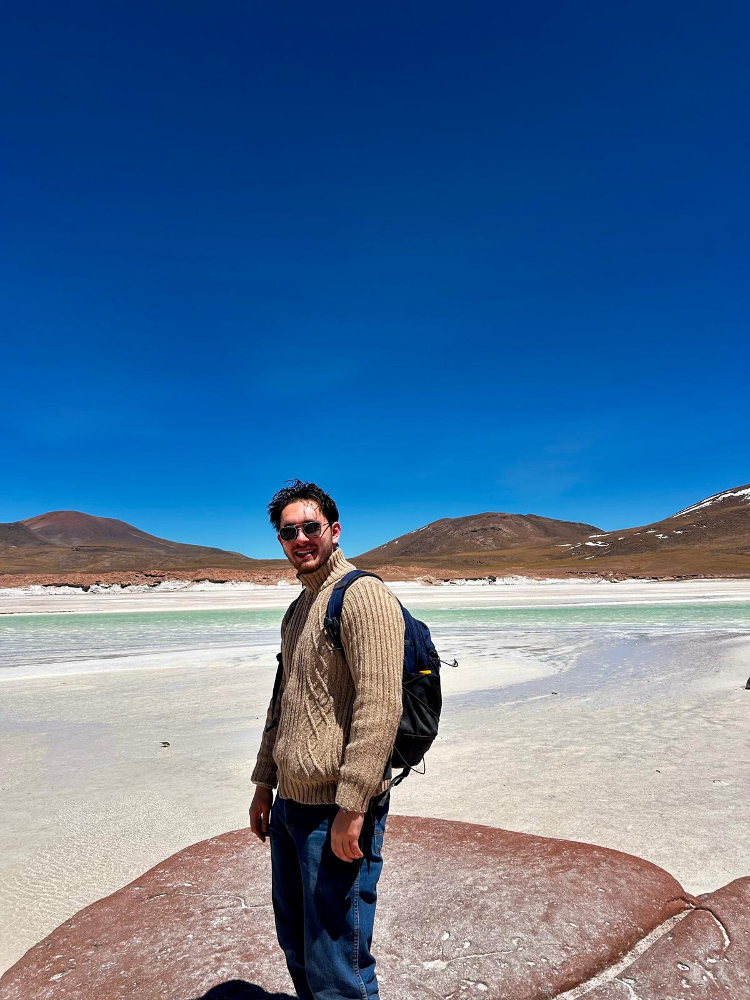

Transparent, governable, and built to transform your operations.
Bespoke AI systems designed around your team — not retrofitted
templates. Every action logged, every decision traceable, every
cost capped.
Most organisations can't integrate AI because they can't trust it . As capabilities of AI systems grow, so too do the risks of poor design and governance
Off-the-shelf AI is unpredictable, opaque about its costs, and
silent when something goes wrong. For an NGO, an SME, or any team
where a bad output costs money or reputation, that's an
unacceptable risk.
02 — The solution
We build the rules, roles, and structure that turn probabilistic
models into reliable, predictable systems.
Reliable systems that monitor, draft, route, approve, and log —
every step visible, every action accountable. Each agent has a
scoped role, human approval sits where it matters, costs are
capped, and every decision is recorded. Your team stays in control;
the system does the work around them.
03 — Our mission
Reliable, auditable, human-controlled AI shouldn't be a premium
feature — it's what effective, responsible deployment looks like.
Glass Squid exists to make governance-first design the default, not the
exception: through the systems we build for clients, the tools we
develop, and the research we contribute to the field, we're
committed to ensuring that the governance of AI keeps up with the
rate of AI progress.
Our design principles
Five non-negotiable properties, engineered in from the first drawing.
Not bolted on after launch.
Reliable
Stops one bad output becoming a bad outcome. Each agent has a scoped
role; verifier agents catch errors before they ship; fallbacks trigger
when confidence is low. No single point of failure.
Governable
Every decision is traceable and reviewable. Audit trails, policy-as-code,
and human approval gates are part of the architecture — ready for
internal review, regulators, and the next framework that lands.
Cost Effective
Prevents silent API cost escalation. Right-sized models per agent,
hard budget ceilings, and spend visible in real time — so a runaway
loop never becomes a surprise invoice.
Model Agnostic
You own the architecture, not a dependency on one vendor. Swap models
per agent as the landscape shifts — without rebuilding. Yesterday's
best model is tomorrow's commodity; the system outlasts both.
Outcome Driven
Designed against the outcome you actually need — not an AI demo.
We define success up front, instrument for it, and tune until the
system delivers the result the work requires.
What we've seen
Why most AI systems fail in production.
The pattern is familiar. A promising pilot ships. Six months later,
the team has quietly stopped using it. Here's what goes wrong.
i.
Agents act without oversight
No approval gates, no scope limits. One bad decision ships to production before anyone sees it.
ii.
Costs spiral silently
A recursive loop, a runaway retry, a prompt that grew. The invoice arrives before the alarm does.
iii.
Outputs cannot be trusted
No provenance, no verification step. Teams re-check everything by hand — and the time saved evaporates.
iv.
No audit trail exists
When a regulator, client, or board asks "why did it do that?" — there is no answer. Only a hunch.
v.
The team abandons it
Fragile, opaque, and unpredictable. Quietly shelved. The budget was spent; the outcome never arrived.
Glass Squid systems are designed so none of this happens.
Oversight, cost ceilings, verification, audit trails, and legibility are
in the architecture from day one.
Systems we design
A sample of Glass Squid Systems
Every engagement produces a bespoke system. Below are five patterns
we build — each one personalised, none of them a template.
System · 01
Automated research & event tracking
Monitors the sources you care about, triages signal from noise,
cross-references findings, and delivers a daily briefing with
sentence-level provenance.
Outcome — analyst research time reduced by 60–80%.
Nothing material is missed.
ResearchMonitoringBriefing
System · 02
Fundraising pipeline
Identifies prospects, scores donor fit, drafts tailored outreach in
your tone of voice, and routes each message for human approval before
anything is sent.
Outcome — 3–5× more qualified prospects reached,
compliance posture intact.
NGOOutreachCompliance
System · 03
Intelligent CRM
Remembers every touchpoint, drafts follow-ups, and flags at-risk
accounts before they churn.
Outcome — no lead goes cold; every handover
briefed.
SalesMemory
System · 04
Ops triage
Classifies inbound, routes to the right owner, resolves tier-1
automatically, and escalates with full context.
Outcome — ~70% of tier-1 handled without a
human; response times cut.
OperationsTriage
System · 05
Policy & regulation desk
Tracks jurisdictional changes, programme rules, and donor
requirements; summarises impact for your operation; drafts internal
briefings and programme reports — every claim cited, every draft
reviewed.
Outcome — compliance and programme teams stay
ahead, not behind.
NGOPolicyRegulated
Not listed above?
Bring us the outcome. We'll bring a system.
If it sits in the seam between "we could do this by hand" and "we
wish software existed for this" — it's probably a Glass Squid
problem.
Every engagement follows the same careful process — shaped around
your desired outcomes, constraints, and needs.
i · audit
Audit
Map the outcome, constraints, privacy posture. Decompose the work into agents, tools, and handoffs.
ii · design
Design
Our System Design agent — built and stress-tested in-house — drafts a full topology in hours; our team challenges, refines, and signs it off.
iii · build
Build
Implement, evaluate, red-team, tune. Every agent's scope, budget, and escalation path locked in.
iv · hand off
Hand off
Ship with runbooks, monitoring, and training. The system stays legible to your team — not a black box.
v · iterate
Iterate
Ongoing support as your needs evolve and AI capabilities advance. The system grows with you.

Founder · Covi
From humanitarian operations to the governance of AI.
Covi spent five years with the United Nations World Food Programme,
working across policy development and emergency operations in Italy,
Kenya, and Sudan. In his final role, he worked within WFP's
technology division, coordinating implementation of emergency
telecommunications in Sudan — and learning first hand what it means
to deliver technology in environments where unexpected failures
weren't an option.
That experience shaped how he thinks about AI. Organisations don't
fail to use technology because they lack ambition — they hold back
because they can't audit what it does, can't explain its decisions,
and can't cap what it costs. Glass Squid Systems exists to remove
that blocker: bespoke AI systems designed from the ground up to be
reliable, traceable, and owned by the teams using them.
Bring us a messy outcome. We'll return a system.
A scoping call is 30 minutes, on us. We'll listen carefully, ask the
sharp questions, and tell you honestly whether an agent system is the
right answer.